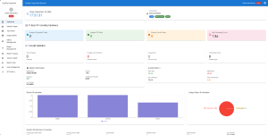
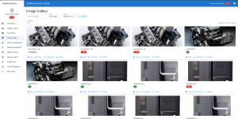
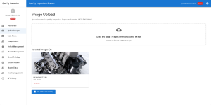
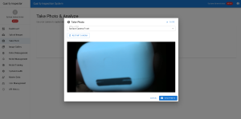
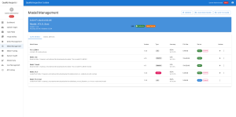
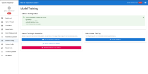

Transforming Manufacturing with AI-Powered Visual Quality Inspection
In modern manufacturing, quality is everything. A single defect slipping through can mean recalls, warranty costs, or even safety risks. Traditional manual inspections are often slow, inconsistent, and costly. This is where the Visual Quality Inspection System (VQIS) steps in — a state-of-the-art AI/ML-driven platform that automates defect detection, improves consistency, and provides actionable insights in real time.

The overview of the KPIs of the VQISWhat is VQIS?

The detected images galleryVQIS is an AI-powered quality inspection solution that integrates seamlessly into production lines. Using computer vision, YOLO-based deep learning models, and real-time analytics, it helps manufacturers identify surface, structural, color, and assembly defects with unmatched accuracy.
Key capabilities include:
-
🔍 Real-time visual inspection with high-resolution cameras
-
🤖 AI-driven defect detection and classification
-
📊 Analytics dashboards for defect trends and process optimization
-
🔧 Seamless integration with MES, ERP, and PLC systems
-
🌐 Secured REST API for interoperability with shop floor systems
User Experience: From Upload to AI Detection
One of VQIS’s strengths lies in its intuitive user interface that simplifies the inspection process for operators and engineers alike.

Upload images for detection1. Uploading Images for Inspection
Users can drag, drop, or directly select images to upload into the system. The platform supports multiple image formats (JPEG, PNG, WebP) and handles up to 10MB per file.
📷 Example: Uploading a car engine image for inspection
With just one click, the uploaded image is processed, and the AI model begins analyzing it for potential defects.
2. Taking Live Photos from the Production Line

Stream the live photo from cameraBeyond uploads, VQIS supports real-time photo capture using industrial cameras. Operators can take photos directly from the interface, feeding live data into the inspection pipeline.
📷 Example: Taking a live photo for immediate analysis
This ensures instant feedback during production, enabling quick decision-making and reducing costly delays.
Integration Features: Connecting to Your Shop Floor
A standout feature of VQIS is its ability to integrate with existing MES and shop floor control systems. Through its robust, secured REST API, VQIS can:
-
Receive live-stream product images directly from production systems
-
Run AI/ML-powered quality analysis in real time
-
Return defect detection results and quality scores instantly
-
Feed data back into MES/ERP to optimize production quality and flag potential issues before they escalate
This means manufacturers don’t need to replace their current systems — instead, VQIS enhances them with intelligence, strengthening both quality assurance and production efficiency.

The Machine Learning Model which available for training or detection.AI/ML at the Core
The heart of VQIS is its machine learning pipeline powered by YOLO v8 and PyTorch. The system is capable of:
-
Detecting scratches, cracks, dents, discoloration, misalignments, and more
-
Performing multi-angle inspections with sub-second response times
-
Continuously learning from new data, improving accuracy with each cycle
With 95%+ detection accuracy and real-time inference at 30+ FPS, VQIS ensures no defect goes unnoticed.

AI / ML model training to improve the precious of the detection.Why Manufacturers Choose VQIS
✅ Cost Savings – 60–80% reduction in manual inspection costs
✅ Speed – 10x faster inspections than traditional methods
✅ Consistency – Elimination of human variability
✅ Scalability – Flexible deployment across industries and production lines
✅ Interoperability – Robust API connectivity to integrate seamlessly with MES/ERP
From automotive parts and electronics to medical devices and food packaging, VQIS adapts to any sector where quality matters.
Conclusion
The Visual Quality Inspection System (VQIS) isn’t just a tool — it’s a strategic advantage for manufacturers aiming for zero-defect production and Industry 4.0 readiness.
If your organization is looking to reduce inspection costs, accelerate throughput, and deliver superior product quality, VQIS is your answer.
💡 Ready to see it in action? Contact our team to schedule a live demo and experience how AI can revolutionize your quality control.
👉 If you are interested in the solution, please leave your contact details in the comments.